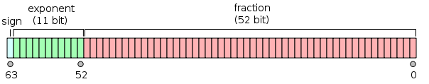
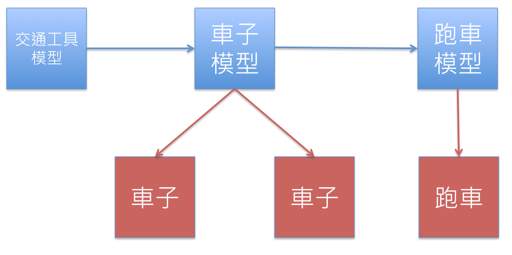
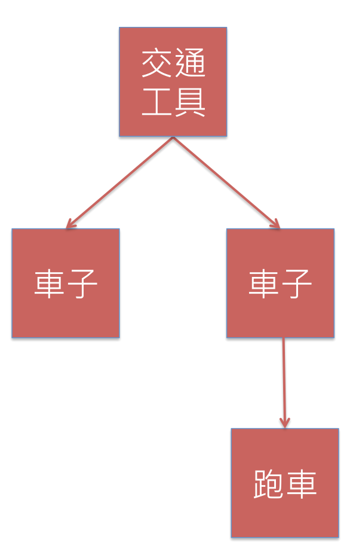

JavaScript Good/Bad Parts
JavaScript Good/Bad Parts
JavaScript 是個很棒也很糟糕的程式語言
Designing a Language in 10 Days (Brendan Eich)
Doug Crockford
輕量級資料交換格式「JSON」的創造者
2008 年出版的經典
也有中譯本 - JavaScript：優良部分
Youtube 上也有這個主題的演講
這個禮拜的內容就會大致從這裡面去濃縮、延伸
Good Parts
表達非常的簡潔
var num = 1;
var bool = true;
var str = 'This is a sentence.';
var obj = {
name: 'John',
age: 18
};
var arr = [ 1, 2, 3 ];
所以大家才喜歡「JSON」
程式可以很 Object-oriented programming (OOP) 也可以很 Functional programming (FP)
Object-oriented programming (OOP)
function Car(engine) {
this.engine = engine;
}
function Engine() {}
var engine = new Engine();
var car = new Car(engine);
ES2015 - OOP
class Car {
constructor(engine) {
this.engine = engine;
}
}
class Engine {}
var engine = new Engine();
var car = new Car(engine);
Functional programming (FP)
function compose(...funcs) {
return arg => funcs.reduceRight((composed, f) => f(composed), arg);
}
function add1(val) {
return val + 1;
}
function powerOf2(val) {
return val * val;
}
var add1ThenPowerOf2 = compose(powerOf2, add1);
add1ThenPowerOf2(1) // 4
dynamic objects
不想要讓 console 有東西 log 出來可以直接把它蓋掉
console.log = function() {};
這會讓測試更容易寫
lambda
[ 1, 2, 3, 4 ].filter(function(val) { return val % 2 === 0; })
// [ 2, 4 ]
通常也被稱為 Anonymous function
Java
網景公司管理層希望它外觀看起來像Java
因此取名為JavaScript
也在 Java Applet 失敗後頂住前端的位置
動態型別 (Dynamic type) + 弱型別 (Weak type)
Python、Ruby 雖都是動態型別 (Dynamic type)
但也都是強型別 (Strong type)
JavaScript 卻是弱型別 (Weak type)
1 + '1' // 11
1 + {} // "1[object Object]"
它會試圖把各種東西轉換成數字或字串來比對
[] + [] // ""
{} + {} // NaN
[] + {} // "[object Object]"
{} + [] // 0
// .....WTF?
但我忘光了
不會有人這麼喜歡踩地壘
// http://stackoverflow.com/questions/7202157/why-does-return-the-string-10
++[[]][+[]]+[+[]] // "10"
所以請使用 === 和 !==
不要使用 == 和 !=
(至少在你還不夠熟悉的時候)
內建陷阱 keyword: typeof
typeof 1
typeof NaN
typeof true
typeof "this is a string."
typeof []
typeof {}
typeof function() {}
typeof undefined
typeof null
// typeof 很好用，像是判斷 string、boolean、undefined、function
// 但有些時候...
typeof null // "object"
typeof [] // "object"
typeof NaN // "number"
Phony Array
連 chrome 都會被騙
// http://blog.vjeux.com/2010/javascript/javascript-fake-arrays.html
({0: 42, 1: 666, length: 2, splice: function() {}}) // [42, 666]
JavaScript 跟很多語言都是使用
(double-precision 64-bit format IEEE 754)
1 位正負號、11 位指數、52 位精準度
浮點數運算有精準度問題
0.1 + 0.2 === 0.3 // false
0.1 + 0.2 // 0.30000000000000004
Number.MAX_VALUE // 1.7976931348623157e+308
Number.MAX_VALUE * 2 // Infinity
Infinity、-Infinity、NaN 都是特殊的 Number
另一個雷 isNaN
isNaN('1') // false
型別轉換請永遠戒慎恐懼
var a = '-1';
+a // -1
var a = '-1';
'' + a // "-1"
var a = '-1';
!!a // true
prototype 繼承
類別繼承 (class) inherit
按照設計圖 (class) 來建立物件
prototype 繼承 inherit
建構式 constructor
JavaScript 建構式也是用 function
慣例上首字會大寫
function Person(name, age) {
this.name = name;
this.age = age;
}
就可以用 new 產生物件了
var person1 = new Person('Tim', 18);
var person2 = new Person('Joe', 24);
可以在 prototype 上寫一些功能
Person.prototype.getName = function() {
return this.name;
};
所有依照 Person prototype 建出來的物件都可以用了
person1.getName(); // Tim
沒有加 new 會發生什麼事？
屬性都會跑到 global，除非你在嚴格模式
prototype and __proto__ 的差別？
prototype 是放在 constructor function 上的，在建構物件時會用到
__proto__ 則是物件實際在 inherit chain 下查詢用到的
this
this 到底指向誰是一個容易困惑的問題
這個特別的 keyword，是由呼叫的狀況來決定的
直接在物件上呼叫 this 當然是指物件本身
function DemoItem(item) {
this.internalItem = item;
}
DemoItem.prototype.show = function() {
console.log(this.internalItem);
}
var item = new DemoItem('demo');
item.show();
但這樣呢？
var show = item.show;
show(); // this 錯了
如果你把一個裡面有 this 的 function 丟給別人
那很有可能會出問題
element.addEventListener('click', function() {
// 這是丟給別人的 function
// 這有用 this 要很小心！！
});
改變 this 的做法
Function.prototype.apply(thisArg, [argsArray])
var marshall = {
name: 'Marshall',
walk: function() {
console.log(this.name + ' walk');
}
};
marshall.walk(); // Marshall walk
marshall.walk.apply({ name: 'Amy' }); // Amy walk
Function.prototype.bind(thisArg[, arg1[, arg2[, ...]]])
var log1 = console.log;
log1('demo'); // Uncaught TypeError: Illegal invocation(…)
var log2 = console.log.bind(console);
log2('demo'); // 'demo'
var log3 = console.log.bind(console, 'assign', 'other', 'args');
log3(); // 'assign other args'
用處？
練習
把前面的 apply 範例改成用 bind 寫
以瞭解 apply 跟 bind 的差異
Lexical scope
JavaScript 每個 function 都會產生一個 Lexical scope
找變數時會在 scope chain 一路往上找
var y = 3;
function outer() {
var x = 2;
var y = 1;
function inner() {
var x = 1;
console.log(x + y); // 2
}
}
closure (閉包)
如果外圍 function 已經執行並 return 了
還有可以參考到的 independent (free) variables
就會形成 closure
function makeList() {
var list = []; // free variables in closure
return {
getState: function() {
return list;
},
append: function(item) {
list.push(item);
}
};
}
var list = makeList();
list.append(1);
list.append(2);
list.getState(); // [1, 2]
練習：試著加上 reset function 看看
練習：寫一個 once function
function log() {
console.log('some side effects');
}
var logOnlyOnce = once(log);
logOnlyOnce(); // 'some side effects'
logOnlyOnce(); // 不會在有東西印出來
練習：寫一個 delay function
function log() {
console.log('some side effects');
}
var logDelay = delay(log, 1000);
logDelay(); // 一秒鐘後... 'some side effects'
分號插入機制
(semicolon insertion)
寫程式的人很喜歡戰 coding style
這樣寫比較好？
if (true) {
}
還是這樣寫比較好？
// js 幾乎沒人這樣寫
if (true)
{
}
因為 semicolon insertion
function demo() {
return
{
}
}
會自動被解析成這樣
function demo() {
return;
{
}
}
會 return undefined
還有些狀況是想要有分號沒分號
function demo() {}
demo()
[1, 2, 3]
會自動被解析成這樣
function demo() {}
demo()[1, 2, 3] // Uncaught TypeError: Cannot read property '3' of undefined(…)
所以請在結尾加上 ;
(至少在你還不夠熟悉的時候)
Thanks for listening